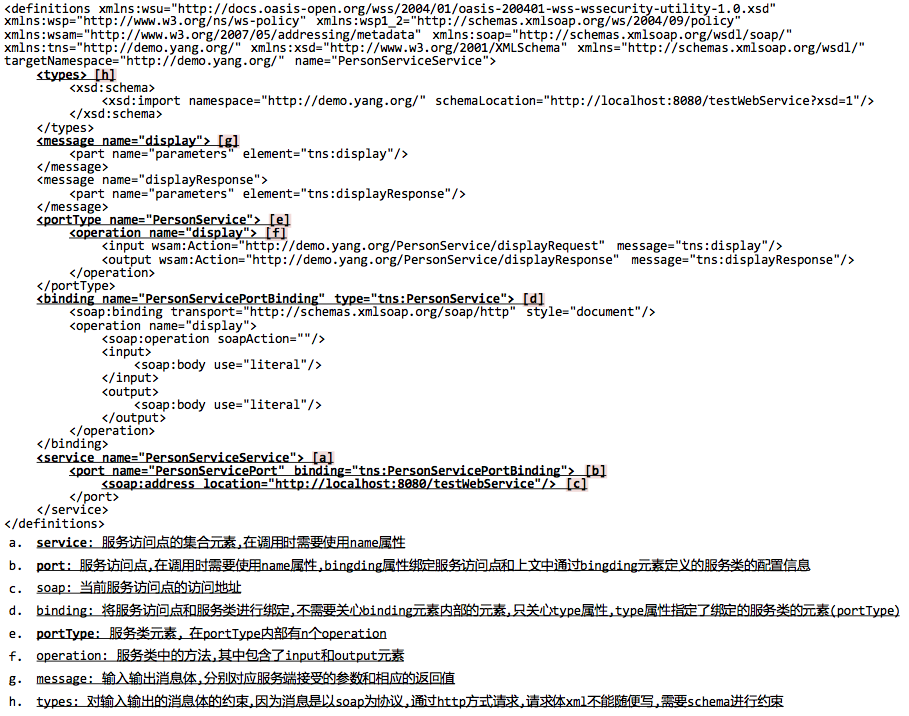

第一部分 基础知识
1.1 webService概述
- 服务: 部署在服务器中，提供请求响应的程序称为服务
- 协议: 双方规定的一种通信方式
- 使用Socket方式进行远程方法调用
- Server端
//业务逻辑
public class UserService {
public String display() {
return "test...";
}
}
public class Server {
public static void main(String args []) {
//服务套接字监听端口8888
ServerScoket ss = new ServerScoket(8888);
//接收客户端请求
Socket s = ss.accept();
//调用业务逻辑方法
String result = new UserService().display();
//响应客户端
BufferWriter out =
new BufferWriter(new OutputStreamWriter(s.getOutputStream()));
out.write(result);
out.flush();
out.close();
s.close();
ss.close();
}
}
请在电脑端查看代码...
- Client端
public class Client {
public static void main(String args []) {
//为指定IP地址的指定端口发送请求
Socket s = new Socket("192.168.15.82", 8888);
//获取服务端返回的结果
BufferReader br = new
BufferReader(new InputStreamReader(s.getInputStream()));
String line = null;
while ((line = br.readLine()) != null) {
System.out.println(line);
}
br.close();
s.close();
}
}
请在电脑端查看代码...
- 缺点: Socket可以做远程方法调用，但是协议过于底层化，过于麻烦
- 使用Http协议进行远程方法调用
- Server端
@WebServlet(name="webServlet",value="/webServlet")
public class WebServlet extends HttpServlet {
public void doGet(HttpServletRequest request, HttpServletResponse response) {
response.setContentType("text/html");
PrintWriter out = response.getWriter();
out.print("test...");
}
public void doPost(HttpServletRequest request,
HttpServletResponse response) {
this.doGet();
}
}
请在电脑端查看代码...
- Client端
public class Client {
public static void main(String args []) {
URL url = new URL("http://localhost:8080/http_server/webServlet");
URLConnection uc = url.openConnection();
HttpURLConnection huc = (HttpURLConnection) uc;
huc.setRequestMethod("post");
huc.setRequestProperty("Content-Type", "text/html;charset=utf-8");
huc.setDoInput(true);
huc.setDoOutput(true);
OutputStream out = uc.getOutputStream();
out.write("".getBytes());
int httpResp = huc.getResponseCode();
if (httpResp == 200) {
BufferReader br = new
BufferReader(new InputStreamReader(huc.getInputStream()));
String line = null;
while ((line = br.readLine() != null) {
System.out.println(line);
}
}
}
}
请在电脑端查看代码...
- 缺点: 可以做远程方法调用，双方协议需要通过双方共同确定，操作繁琐
- SOAP协议: webservice使用的协议是SOAP协议，这种协议在HTTP协议上做了包装，将传输的文本信息修改为XML
- Webservice特点: 远程方法调用，异构系统之间的调用
1.2 WSDL
- WSDL(Web Services Description Language): 是WebService的描述语言，它包含一系列描述某个web service的定义
- 读取WSDL文档的方式: 自下而上读取文档
- 创建WebService服务端
- WSDL文档

- 约束
- 消息体
- 客户端通过发送请求消息体获得相应消息体
public class Client {
public static void main(String args []) throws IOException {
URL url = new URL("http://localhost:8080/testWebService");
URLConnection uc = url.openConnection();
HttpURLConnection huc = (HttpURLConnection) uc;
huc.setRequestMethod("POST");
huc.setRequestProperty("Content-Type", "text/xml;charset=utf-8");
huc.setDoInput(true);
huc.setDoOutput(true);
OutputStream out = uc.getOutputStream();
String message = ""
+ "yang";
out.write(message.getBytes());
int httpResp = huc.getResponseCode();
if (httpResp == 200) {
BufferedReader br = new
BufferedReader(new InputStreamReader(huc.getInputStream()));
String line = null;
while ((line = br.readLine()) != null) {
System.out.println(line);
}
}
}
}
请在电脑端查看代码...
1.3 JDK客户端调用
- WebService实际上通过网络根据soap协议传输数据，手动组装消息体过于麻烦
- 使用wsimport生成客户端代码
- 准备空文件夹存放生成的客户端访问代码,并在终端进入该文件夹根目录
- 命令参数:
wsimport -s . -p org.yang.demo.stub wsdl_url (-s 生成源代码; -p 生成代码后的包名;)
- 将生成的所有*.java文件拷贝到客户端工程中
- 使用客户端代码进行调用
//1. 创建服务访问点集合对象
PersonServiceService pss = new PersonServiceService();
//2. 获得服务访问点绑定的类,使用get+port节点的name属性值(getPersonServiceProt)
PersonService ps = pss.getPersonServicePort();
//3. 调用服务端的方法
String result = ps.display("yang");
System.out.println(result);
请在电脑端查看代码...
1.4 JDK服务端发布
- WebService注解
- 发布
- 禁用方法
- 面向接口的编程中，发布服务依然需要在实现类中加@WebService注解，发布时传入的实例化对象也是实现类对象
- 在eclipse中配置TCP IP代理
第二部分 CXF
2.1 cxf概述
- 概述: Apache CXF=Celtix+XFire，开始叫Apache CeltiXfire，后来更名为Apache CXF了，
简称CXF;CXF继承了Celtix和XFire两大开源项目的精华，提供了对JAX-WS全面的支持，
并且提供了多种Binding、DataBinding、Transport以及各种Format的支持，并且可以根据实际项目的需要，
采用代码优先（Code First）或者WSDL优先（WSDL First）来轻松地实现Web Services的发布和使用
- cxf支持多种协议: SOAP,HTTP,CORBA(公共对象请求代理结构)等
- 环境搭建
- 检查当前系统环境是否配置JAVA_HOME
- 解压CXF核心压缩包，放到一个非中文无空格目录下
- 配置Maven环境变量
export CXF_HOME=/Users/yangyuhao/Documents/Resource/apache-cxf-3.1.9
export PATH=.$PATH:$CXF_HOME/bin
- 输入
wsdl2java命令查看是否输出报错
2.2 cxf服务端发布
- ServerFactoryBean
- JaxWsServerFactoryBean
- 发布带有接口的服务
- 输入输出消息拦截器
2.3 soap12
- 服务端发布soap12服务
- 客户端生成soap12代码
- wsimport生成soap12代码会出现问题，无法生成服务发布点类和服务类
- wsdl2java命令生成客户端代码:
wsdl2java -d . -p org.yang.demo.stub http://localhost:8999/cxfTest?wsdl
- wsdl12java同样可以生成soap11代码
- soap11和soap12消息体区别
- 兼容关系
2.4 以web形式发布
- 创建动态web工程
- 加入需要的jar包
- 编写服务类
- 添加cxf-servlet.xml配置文件
- 配置web.xml
- 启动tomcat服务器
2.5 Spring整合cxf
- 创建动态web工程
- 加入工程需要的jar包
- 添加Spring配置文件
- 编写服务类: 在接口上使用@WebService注解，在接口实现类使用@Service注解
- 编写cxf配置文件
- 配置web.xml
- 启动tomcat服务器
2.6 jQuery调用WebService
$.ajax({
url: "http://localhost:8080/cxf_spring_server/services/userService?wsdl",
type: "post",
dataType: "text",
contentType: "text/xml;charset=utf-8",
data: data //data:请求消息体,
success: function(responseText) {
//responseText:响应消息体
var $obj = ${responseText};
var result = $obj.find("return").text();
if (result == "success") {
alert("success");
} else {
alert("error");
}
},
error: function() {
alert("error");
}
})
请在电脑端查看代码...